Load packages & workspace.
# install packages
## devtools::install_github("https://github.com/tdienlin/td@v.0.0.2.5")
# define packages
library(broom.mixed)
library(brms)
library(corrr)
library(devtools)
library(GGally)
library(ggplot2)
library(gridExtra)
library(kableExtra)
library(knitr)
library(lavaan)
library(lme4)
library(magrittr)
library(mice)
library(PerFit)
library(performance)
library(psych)
library(quanteda.textstats)
library(scales)
library(semTools)
library(tidyverse)
library(td)
# load workspace
load("data/workspace_1.RData")Let’s first inspect the individual measures, how they develop over time. For positive and negative affect, we also look at their factor structure, as they’re measured with multiple items.
Let’s inspect the development of life satisfaction across the study. We nest reponses inside participants and waves to get better results.
fit_life_sat <- lmer(life_sat ~ (1 | id) + (1 | wave), d_long_100_imp)
summary(fit_life_sat)## Linear mixed model fit by REML ['lmerMod']
## Formula: life_sat ~ (1 | id) + (1 | wave)
## Data: d_long_100_imp
##
## REML criterion at convergence: 558297
##
## Scaled residuals:
## Min 1Q Median 3Q Max
## -4.021 -0.504 0.164 0.648 3.900
##
## Random effects:
## Groups Name Variance Std.Dev.
## id (Intercept) 1.11455 1.0557
## wave (Intercept) 0.00534 0.0731
## Residual 4.99443 2.2348
## Number of obs: 123794, groups: id, 3639; wave, 34
##
## Fixed effects:
## Estimate Std. Error t value
## (Intercept) 6.4900 0.0224 289dat_fig_life_sat <- data.frame(type = "Life satisfaction", dimension = "Life satisfaction",
get_dat(fit_life_sat))
make_graph(dat_fig_life_sat, "Life Satisfaction", 1, 10)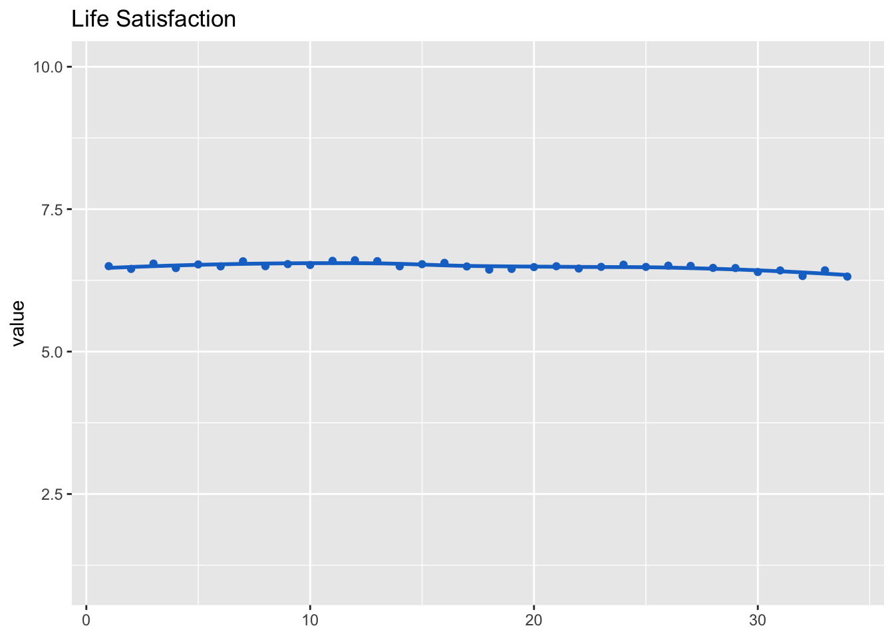
Let’s next expect the development across waves.
model_aff_pos <- lmer(aff_pos_m ~ (1 | id) + (1 | wave), d_long_100_imp)
summary(model_aff_pos)## Linear mixed model fit by REML ['lmerMod']
## Formula: aff_pos_m ~ (1 | id) + (1 | wave)
## Data: d_long_100_imp
##
## REML criterion at convergence: 344960
##
## Scaled residuals:
## Min 1Q Median 3Q Max
## -3.890 -0.699 -0.010 0.701 3.847
##
## Random effects:
## Groups Name Variance Std.Dev.
## id (Intercept) 0.27487 0.5243
## wave (Intercept) 0.00142 0.0377
## Residual 0.88348 0.9399
## Number of obs: 123794, groups: id, 3639; wave, 34
##
## Fixed effects:
## Estimate Std. Error t value
## (Intercept) 3.1570 0.0112 283dat_fig_aff_pos <- data.frame(type = "Affect", dimension = "Positive",
get_dat(model_aff_pos))
make_graph(dat_fig_aff_pos, "Positive Affect", 1, 5)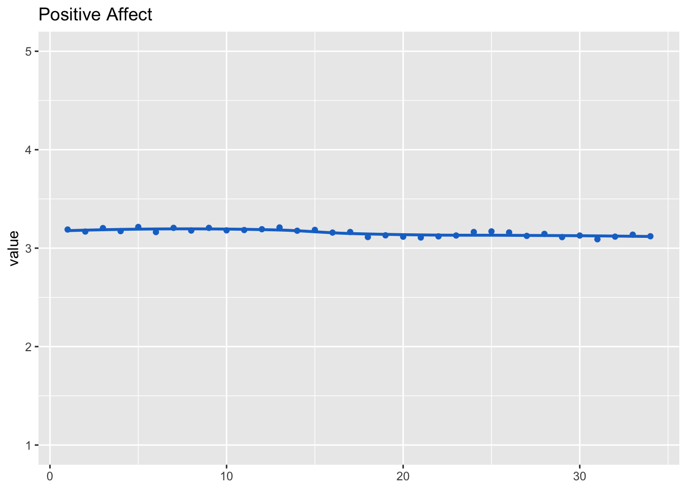
Positive affect was measured as a scale. We hence also inspect factorial validity using CFA.
We first test assumption of multivariate normality. We focus on wave 1 here.
d_long_100_imp %>%
filter(wave == 1) %>%
select(aff_pos_1, aff_pos_2, aff_pos_3) %>%
mardia()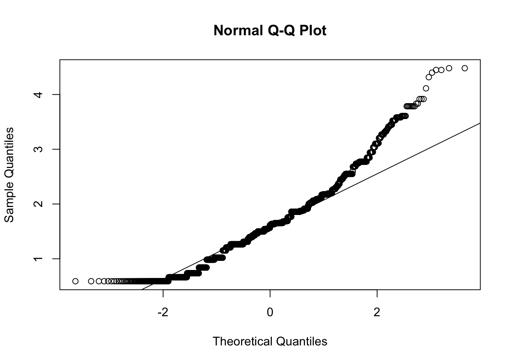
## Call: mardia(x = .)
##
## Mardia tests of multivariate skew and kurtosis
## Use describe(x) the to get univariate tests
## n.obs = 3641 num.vars = 3
## b1p = 0.33 skew = 202 with probability <= 0.000000000000000000000000000000000000067
## small sample skew = 202 with probability <= 0.000000000000000000000000000000000000059
## b2p = 14 kurtosis = -3 with probability <= 0.0026Assumption of multivariate normal distribution was violated; hence, robust estimator will be used.
model <- "
aff_pos =~ a1*aff_pos_1 + a2*aff_pos_2 + a3*aff_pos_3
"
cfa_aff_pos <- cfa(model, d_long_100_imp, group = "wave", estimator = "MLM")
summary(cfa_aff_pos, standardized = TRUE, fit = TRUE, estimates = FALSE)## lavaan 0.6.15 ended normally after 105 iterations
##
## Estimator ML
## Optimization method NLMINB
## Number of model parameters 306
## Number of equality constraints 66
##
## Number of observations per group:
## 1 3641
## 2 3641
## 3 3641
## 4 3641
## 5 3641
## 6 3641
## 7 3641
## 8 3641
## 9 3641
## 10 3641
## 11 3641
## 12 3641
## 13 3641
## 14 3641
## 15 3641
## 16 3641
## 17 3641
## 18 3641
## 19 3641
## 20 3641
## 21 3641
## 22 3641
## 23 3641
## 24 3641
## 25 3641
## 26 3641
## 27 3641
## 28 3641
## 29 3641
## 30 3641
## 31 3641
## 32 3641
## 33 3641
## 34 3641
##
## Model Test User Model:
## Standard Scaled
## Test Statistic 91.607 101.525
## Degrees of freedom 66 66
## P-value (Chi-square) 0.020 0.003
## Scaling correction factor 0.902
## Satorra-Bentler correction
## Test statistic for each group:
## 1 6.200 6.872
## 2 5.536 6.136
## 3 5.844 6.476
## 4 1.182 1.310
## 5 0.243 0.270
## 6 0.006 0.007
## 7 7.124 7.895
## 8 6.115 6.778
## 9 1.938 2.148
## 10 0.211 0.234
## 11 2.453 2.718
## 12 0.855 0.948
## 13 1.621 1.796
## 14 2.235 2.477
## 15 1.416 1.569
## 16 0.859 0.952
## 17 2.557 2.834
## 18 1.181 1.308
## 19 10.398 11.524
## 20 1.344 1.489
## 21 3.255 3.608
## 22 3.063 3.394
## 23 1.986 2.201
## 24 0.896 0.993
## 25 1.131 1.254
## 26 0.212 0.235
## 27 1.368 1.516
## 28 6.273 6.952
## 29 0.975 1.080
## 30 3.190 3.535
## 31 1.845 2.044
## 32 0.580 0.643
## 33 6.614 7.330
## 34 0.902 0.999
##
## Model Test Baseline Model:
##
## Test statistic 162556.114 182172.729
## Degrees of freedom 102 102
## P-value 0.000 0.000
## Scaling correction factor 0.892
##
## User Model versus Baseline Model:
##
## Comparative Fit Index (CFI) 1.000 1.000
## Tucker-Lewis Index (TLI) 1.000 1.000
##
## Robust Comparative Fit Index (CFI) 1.000
## Robust Tucker-Lewis Index (TLI) 1.000
##
## Loglikelihood and Information Criteria:
##
## Loglikelihood user model (H0) -521289.317 -521289.317
## Loglikelihood unrestricted model (H1) -521243.514 -521243.514
##
## Akaike (AIC) 1043058.634 1043058.634
## Bayesian (BIC) 1045392.964 1045392.964
## Sample-size adjusted Bayesian (SABIC) 1044630.235 1044630.235
##
## Root Mean Square Error of Approximation:
##
## RMSEA 0.010 0.012
## 90 Percent confidence interval - lower 0.004 0.007
## 90 Percent confidence interval - upper 0.015 0.017
## P-value H_0: RMSEA <= 0.050 1.000 1.000
## P-value H_0: RMSEA >= 0.080 0.000 0.000
##
## Robust RMSEA 0.012
## 90 Percent confidence interval - lower 0.007
## 90 Percent confidence interval - upper 0.016
## P-value H_0: Robust RMSEA <= 0.050 1.000
## P-value H_0: Robust RMSEA >= 0.080 0.000
##
## Standardized Root Mean Square Residual:
##
## SRMR 0.008 0.008The data fit the model very well, \(\chi^2\)(66) = 91.61, p = .020, CFI = 1.00, RMSEA = .01, 90% CI [< .01, .02], SRMR < .01. Let’s next inspect reliability.
rel_aff_pos <- get_rel(cfa_aff_pos)The average reliability across all waves was omega = 0.85, hence good.
Let’s now export factor scores for results reported in additional analyses.
# with imputed data
cfa_aff_pos_50 <- cfa(model, d_long_50_imp, group = "wave", estimator = "MLM")
d_long_50_imp$aff_pos_fs <- get_fs(cfa_aff_pos_50)
# without imputed data
cfa_aff_pos <- cfa(model, d_long_50, group = "wave", estimator = "MLM")
d_long_50$aff_pos_fs <- get_fs(cfa_aff_pos)model_aff_neg <- lmer(aff_neg_m ~ (1 | id) + (1 | wave), d_long_100_imp)
summary(model_aff_neg)## Linear mixed model fit by REML ['lmerMod']
## Formula: aff_neg_m ~ (1 | id) + (1 | wave)
## Data: d_long_100_imp
##
## REML criterion at convergence: 294736
##
## Scaled residuals:
## Min 1Q Median 3Q Max
## -4.313 -0.572 -0.192 0.295 4.841
##
## Random effects:
## Groups Name Variance Std.Dev.
## id (Intercept) 0.20084 0.4482
## wave (Intercept) 0.00123 0.0351
## Residual 0.58731 0.7664
## Number of obs: 123794, groups: id, 3639; wave, 34
##
## Fixed effects:
## Estimate Std. Error t value
## (Intercept) 1.80813 0.00981 184dat_fig_aff_neg <- data.frame(type = "Affect", dimension = "Negative", get_dat(model_aff_neg))
make_graph(dat_fig_aff_neg, "Negative Affect", 1, 5)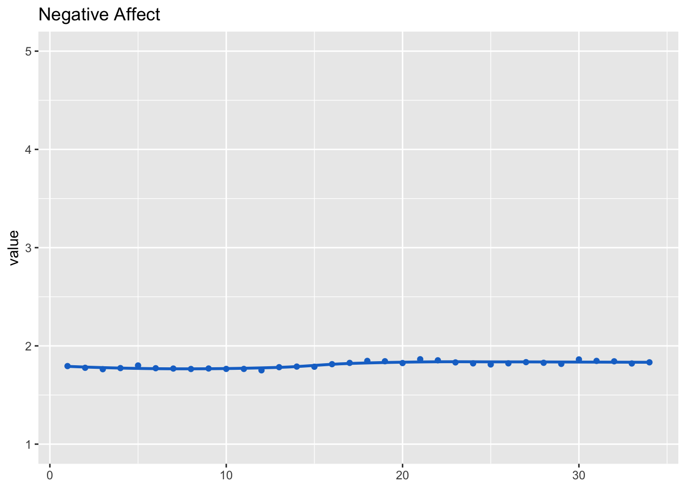
Negative affect was measured as a scale. We hence inspect factorial validity using CFA.
We first test assumption of multivariate normality. We’ll focus on wave 1 here.
d_long_100_imp %>%
filter(wave == 1) %>%
select(aff_neg_1, aff_neg_2, aff_neg_3, aff_neg_4, aff_neg_5, aff_neg_6) %>%
mardia()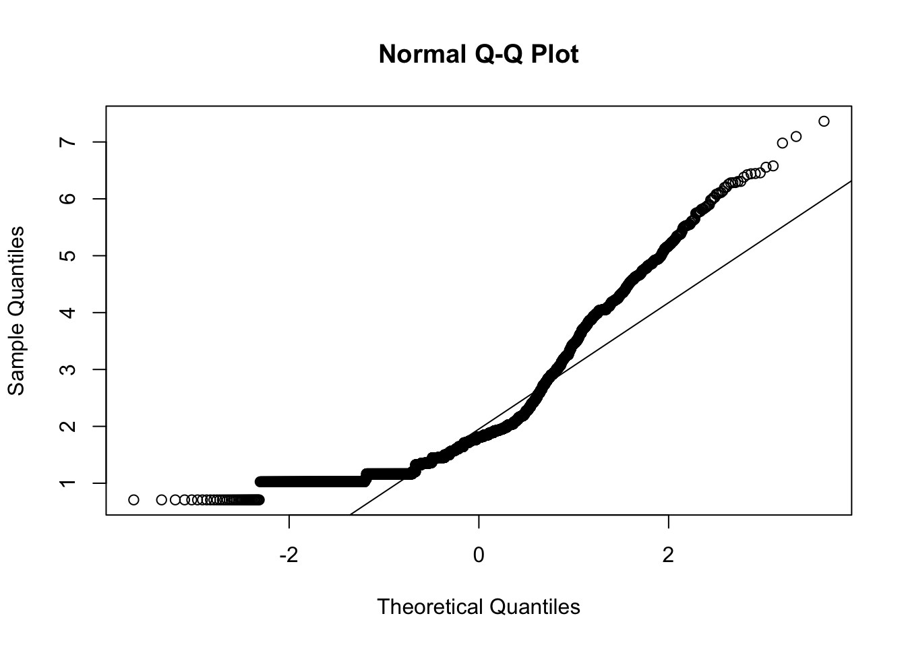
## Call: mardia(x = .)
##
## Mardia tests of multivariate skew and kurtosis
## Use describe(x) the to get univariate tests
## n.obs = 3641 num.vars = 6
## b1p = 13 skew = 7773 with probability <= 0
## small sample skew = 7782 with probability <= 0
## b2p = 85 kurtosis = 114 with probability <= 0Assumption of multivariate normal distribution was violated; hence, robust estimator will be used.
model <- "
aff_neg =~ a1*aff_neg_1 + a2*aff_neg_2 + a3*aff_neg_3 + a4*aff_neg_4 + a5*aff_neg_5 + a6*aff_neg_6
"
cfa_aff_neg <- cfa(model, d_long_100_imp, group = "wave", estimator = "MLM")
summary(cfa_aff_neg, standardized = TRUE, fit = TRUE, estimates = FALSE)## lavaan 0.6.15 ended normally after 105 iterations
##
## Estimator ML
## Optimization method NLMINB
## Number of model parameters 612
## Number of equality constraints 165
##
## Number of observations per group:
## 1 3641
## 2 3641
## 3 3641
## 4 3641
## 5 3641
## 6 3641
## 7 3641
## 8 3641
## 9 3641
## 10 3641
## 11 3641
## 12 3641
## 13 3641
## 14 3641
## 15 3641
## 16 3641
## 17 3641
## 18 3641
## 19 3641
## 20 3641
## 21 3641
## 22 3641
## 23 3641
## 24 3641
## 25 3641
## 26 3641
## 27 3641
## 28 3641
## 29 3641
## 30 3641
## 31 3641
## 32 3641
## 33 3641
## 34 3641
##
## Model Test User Model:
## Standard Scaled
## Test Statistic 8941.917 5116.110
## Degrees of freedom 471 471
## P-value (Chi-square) 0.000 0.000
## Scaling correction factor 1.748
## Satorra-Bentler correction
## Test statistic for each group:
## 1 376.324 215.313
## 2 413.969 236.852
## 3 328.789 188.116
## 4 276.199 158.027
## 5 303.113 173.426
## 6 272.462 155.889
## 7 251.993 144.178
## 8 219.985 125.864
## 9 284.157 162.580
## 10 254.619 145.680
## 11 293.673 168.024
## 12 293.655 168.014
## 13 243.299 139.203
## 14 218.850 125.215
## 15 192.210 109.973
## 16 260.088 148.809
## 17 292.880 167.571
## 18 237.822 136.070
## 19 200.681 114.820
## 20 180.729 103.404
## 21 204.462 116.983
## 22 238.017 136.181
## 23 288.489 165.059
## 24 221.483 126.721
## 25 321.760 184.095
## 26 212.502 121.583
## 27 216.358 123.789
## 28 273.754 156.628
## 29 238.662 136.551
## 30 237.627 135.958
## 31 282.783 161.794
## 32 289.459 165.614
## 33 188.099 107.621
## 34 332.965 190.506
##
## Model Test Baseline Model:
##
## Test statistic 475665.865 176291.139
## Degrees of freedom 510 510
## P-value 0.000 0.000
## Scaling correction factor 2.698
##
## User Model versus Baseline Model:
##
## Comparative Fit Index (CFI) 0.982 0.974
## Tucker-Lewis Index (TLI) 0.981 0.971
##
## Robust Comparative Fit Index (CFI) 0.983
## Robust Tucker-Lewis Index (TLI) 0.981
##
## Loglikelihood and Information Criteria:
##
## Loglikelihood user model (H0) -868181.412 -868181.412
## Loglikelihood unrestricted model (H1) -863710.454 -863710.454
##
## Akaike (AIC) 1737256.824 1737256.824
## Bayesian (BIC) 1741604.513 1741604.513
## Sample-size adjusted Bayesian (SABIC) 1740183.930 1740183.930
##
## Root Mean Square Error of Approximation:
##
## RMSEA 0.070 0.052
## 90 Percent confidence interval - lower 0.069 0.051
## 90 Percent confidence interval - upper 0.072 0.053
## P-value H_0: RMSEA <= 0.050 0.000 0.000
## P-value H_0: RMSEA >= 0.080 0.000 0.000
##
## Robust RMSEA 0.069
## 90 Percent confidence interval - lower 0.067
## 90 Percent confidence interval - upper 0.071
## P-value H_0: Robust RMSEA <= 0.050 0.000
## P-value H_0: Robust RMSEA >= 0.080 0.000
##
## Standardized Root Mean Square Residual:
##
## SRMR 0.021 0.021The data fit the model very well, \(\chi^2\)(471) = 8941.92, p < .001, CFI = .98, RMSEA = .07, 90% CI [.07, .07], SRMR = .02.
Let’s next inspect reliability.
rel_aff_neg <- get_rel(cfa_aff_neg)The average reliability across all waves was omega = 0.91, hence good.
model_aff_neg <- lmer(aff_neg_m ~ (1 | id) + (1 | wave), d_long_100_imp)
summary(model_aff_neg)## Linear mixed model fit by REML ['lmerMod']
## Formula: aff_neg_m ~ (1 | id) + (1 | wave)
## Data: d_long_100_imp
##
## REML criterion at convergence: 294736
##
## Scaled residuals:
## Min 1Q Median 3Q Max
## -4.313 -0.572 -0.192 0.295 4.841
##
## Random effects:
## Groups Name Variance Std.Dev.
## id (Intercept) 0.20084 0.4482
## wave (Intercept) 0.00123 0.0351
## Residual 0.58731 0.7664
## Number of obs: 123794, groups: id, 3639; wave, 34
##
## Fixed effects:
## Estimate Std. Error t value
## (Intercept) 1.80813 0.00981 184Let’s now export factor scores, necessary for results reported in additional analyses.
# with imputed data
cfa_aff_neg_50 <- cfa(model, d_long_50_imp, group = "wave", estimator = "MLM")
d_long_50_imp$aff_neg_fs <- get_fs(cfa_aff_neg_50)
# without imputed data
cfa_aff_neg <- cfa(model, d_long_50, group = "wave", estimator = "MLM")
d_long_50$aff_neg_fs <- get_fs(cfa_aff_neg)The only other variable that was measured as a scale was Locus of Control. Below I hence report the scale’s factorial validity. Waves for which not a sufficient number of respondents took part were excluded.
model <- "
loc_cntrl_int =~ a1*loc_cntrl_int_1 + a2*loc_cntrl_int_2 + a3*loc_cntrl_int_3 + a4*loc_cntrl_int_4
# loc_cntrl_int_1 ~~ loc_cntrl_int_2
loc_cntrl_int_3 ~~ loc_cntrl_int_4
"
cfa_loc_cntrl_int <- cfa(model,
filter(d_long_100_imp, wave != 11, wave != 20, wave != 26, wave != 27, wave != 29, wave != 31, wave != 32),
# d_long_100_imp,
group = "wave")
summary(cfa_loc_cntrl_int, standardized = TRUE, fit = TRUE, estimates = FALSE)## lavaan 0.6.15 ended normally after 98 iterations
##
## Estimator ML
## Optimization method NLMINB
## Number of model parameters 351
## Number of equality constraints 78
##
## Number of observations per group:
## 1 3641
## 2 3641
## 3 3641
## 4 3641
## 5 3641
## 6 3641
## 7 3641
## 8 3641
## 9 3641
## 10 3641
## 12 3641
## 13 3641
## 14 3641
## 15 3641
## 16 3641
## 17 3641
## 18 3641
## 19 3641
## 21 3641
## 22 3641
## 23 3641
## 24 3641
## 25 3641
## 28 3641
## 30 3641
## 33 3641
## 34 3641
##
## Model Test User Model:
##
## Test statistic 143.086
## Degrees of freedom 105
## P-value (Chi-square) 0.008
## Test statistic for each group:
## 1 8.856
## 2 0.930
## 3 3.887
## 4 9.484
## 5 1.268
## 6 11.364
## 7 5.429
## 8 5.817
## 9 1.780
## 10 4.561
## 12 9.744
## 13 4.537
## 14 11.287
## 15 2.771
## 16 3.743
## 17 3.948
## 18 1.829
## 19 2.513
## 21 11.934
## 22 1.407
## 23 3.069
## 24 8.035
## 25 3.977
## 28 1.738
## 30 9.695
## 33 2.673
## 34 6.811
##
## Model Test Baseline Model:
##
## Test statistic 61996.667
## Degrees of freedom 162
## P-value 0.000
##
## User Model versus Baseline Model:
##
## Comparative Fit Index (CFI) 0.999
## Tucker-Lewis Index (TLI) 0.999
##
## Loglikelihood and Information Criteria:
##
## Loglikelihood user model (H0) -471620.199
## Loglikelihood unrestricted model (H1) -471548.656
##
## Akaike (AIC) 943786.397
## Bayesian (BIC) 946378.765
## Sample-size adjusted Bayesian (SABIC) 945511.162
##
## Root Mean Square Error of Approximation:
##
## RMSEA 0.010
## 90 Percent confidence interval - lower 0.005
## 90 Percent confidence interval - upper 0.014
## P-value H_0: RMSEA <= 0.050 1.000
## P-value H_0: RMSEA >= 0.080 0.000
##
## Standardized Root Mean Square Residual:
##
## SRMR 0.011The data fit the model very well, \(\chi^2\)(105) = 143.09, p = .008, CFI = 1.00, RMSEA < .01, 90% CI [.01, .01], SRMR = .01.
Table with descriptives of main variables.
tab_desc_dat <- rbind(
"Life satisfaction" = get_specs(fit_life_sat),
"Positive affect" = get_specs(model_aff_pos),
"Negative affect" = get_specs(model_aff_neg),
"Read" = get_specs(model_soc_med_read),
"Like & share" = get_specs(model_soc_med_like_share),
"Posting" = get_specs(model_soc_med_post),
"Facebook" = get_specs(model_soc_med_fb),
"Twitter" = c(sd = get_specs(model_soc_med_tw)$sd,
min = min(soc_med_tw_m$value, na.rm = TRUE),
max = max(soc_med_tw_m$value, na.rm = TRUE),
mean = mean(soc_med_tw_m$value, na.rm = TRUE)
),
"Instagram" = get_specs(model_soc_med_ig),
"WhatsApp" = get_specs(model_soc_med_wa),
"YouTube" = get_specs(model_soc_med_yt)
) %>%
as.data.frame()
tab_desc_datDisplay the developments of all variables in a combined figure.
fig_desc_dat <- data.frame(
rbind(
dat_fig_life_sat,
dat_fig_aff_pos,
dat_fig_aff_neg,
dat_fig_soc_med_read,
dat_fig_soc_med_like_share,
dat_fig_soc_med_post,
dat_fig_soc_med_fb,
dat_fig_soc_med_tw,
dat_fig_soc_med_ig,
dat_fig_soc_med_wa,
dat_fig_soc_med_yt
) %>%
mutate(
type = factor(.$type, levels = c("Life satisfaction", "Affect", "Social media use", "Social media channel")),
dimension = factor(.$dimension, levels = c("Life satisfaction", "Positive", "Negative", "Reading", "Liking & Sharing", "Posting", "Facebook", "Twitter", "Instagram", "WhatsApp", "YouTube"))
)
)
fig_desc_life_sat <- make_graph(
fig_desc_dat %>% filter(type == "Life satisfaction"),
title = "Life satisfaction",
ll = 0, ul = 10,
lmer = FALSE,
line = TRUE,
legend = FALSE,
points = FALSE
)
fig_desc_aff <- make_graph(
fig_desc_dat %>% filter(type == "Affect"),
title = "Affect",
ll = 1, ul = 5,
lmer = FALSE,
line = TRUE,
points = FALSE,
legend = TRUE
)
fig_desc_soc_med_use <- make_graph(
fig_desc_dat %>% filter(type == "Social media use"),
title = "Social media use",
ll = 1, ul = 5,
lmer = FALSE,
line = TRUE,
points = FALSE,
legend = TRUE
)
fig_desc_soc_med_channel <- make_graph(
fig_desc_dat %>% filter(type == "Social media channel"),
title = "Social media channel",
ll = 1, ul = 5,
lmer = FALSE,
line = TRUE,
points = FALSE,
legend = TRUE
)
fig_desc <- grid.arrange(fig_desc_life_sat, fig_desc_aff,
fig_desc_soc_med_use, fig_desc_soc_med_channel,
nrow = 2, ncol = 2)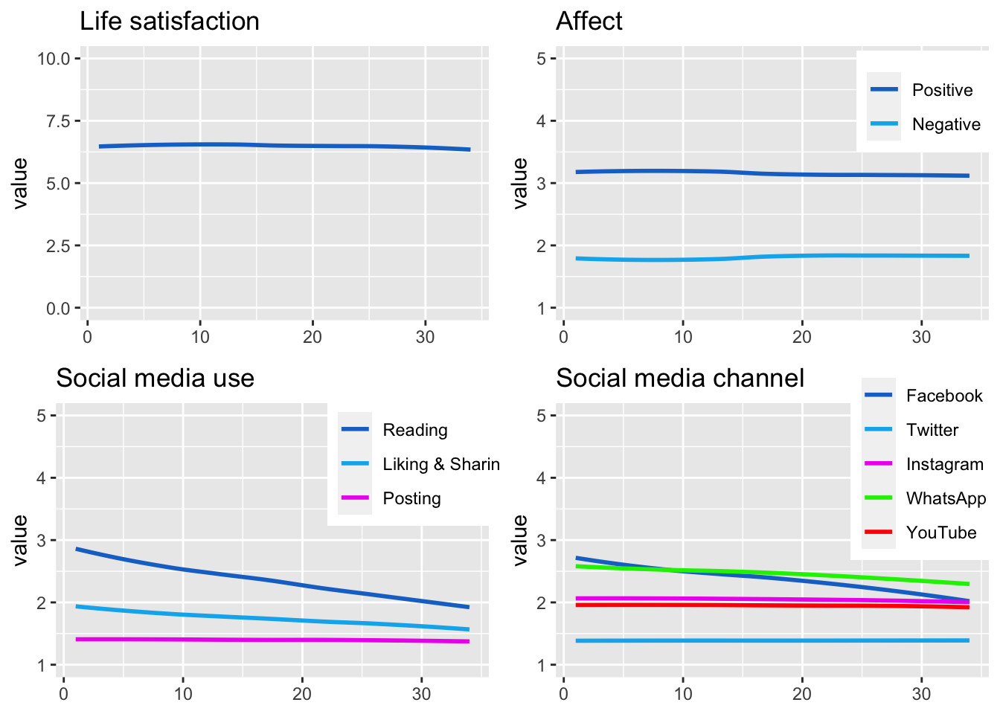
ggsave("figures/fig_descriptives.png",
width = 10, height = 5,
plot = fig_desc)Before running the analyses, let’s briefly check zero-order correlation matrix, to get general picture and also for potential multicollinearity. We use variables from T1.
Multicollinearity will then also be checked explicitly in each analysis.
d_long_100_imp %>%
filter(wave == 1) %>%
select(life_sat, aff_neg_m, aff_pos_m,
soc_med_read, soc_med_post, soc_med_like_share,
soc_med_fb, soc_med_ig, soc_med_tw, soc_med_wa, soc_med_yt,
health, corona_pos, work_h, work_homeoff, hh_income, med_txt_kro, med_txt_sta, med_txt_pre, med_txt_oes, med_txt_kur, med_txt_slz, med_txt_son, med_vid_orf, med_vid_pri, med_txt_kro, med_txt_sta, med_txt_pre, med_txt_oes, med_txt_kur, med_txt_slz, med_txt_son, med_vid_orf, med_vid_pri, act_wrk, act_spo, act_frn, act_sho, act_pet, risk_prop, loc_cntrl_int_m, sat_dem) %>%
cor(use = "pairwise.complete.obs") %>%
as.data.frame()Let’s also briefly look at bivariate relations between the types and channels of social media use and the well-being facets.
dat_cor <-
d_long_100_mim %>%
filter(wave == 1) %>% # we can use wave 1 only, because mean values are the same across waves
select(`Life satis-\nfaction` = life_sat_b,
`Affect\npositive` = aff_pos_m_b,
`Affect\nnegative` = aff_neg_m_b,
`Reading` = soc_med_read_b,
`Posting` = soc_med_post_b,
`Like &\nshare` = soc_med_like_share_b,
`Facebook` = soc_med_fb_b,
`Instagram` = soc_med_ig_b,
`Twitter` = soc_med_tw_b,
`WhatsApp` = soc_med_wa_b,
`YouTube` = soc_med_yt_b)
# cor() %>%
# as.data.frame()
# correlate() %>%
# fashion()
tab_cor <-
dat_cor %>%
correlate() %>%
fashion() %T>%
print()## term Life.satis..faction Affect.positive Affect.negative Reading Posting Like...share Facebook Instagram Twitter WhatsApp YouTube
## 1 Life satis-\nfaction .61 -.55 -.10 -.25 -.21 -.11 -.01 -.14 -.03 -.13
## 2 Affect\npositive .61 -.48 -.15 -.03 -.13 -.07 -.01 .02 .01 .00
## 3 Affect\nnegative -.55 -.48 .52 .61 .61 .32 .49 .52 .43 .55
## 4 Reading -.10 -.15 .52 .50 .79 .45 .79 .50 .47 .58
## 5 Posting -.25 -.03 .61 .50 .78 .35 .53 .77 .62 .77
## 6 Like &\nshare -.21 -.13 .61 .79 .78 .34 .72 .66 .63 .73
## 7 Facebook -.11 -.07 .32 .45 .35 .34 .25 .19 .44 .30
## 8 Instagram -.01 -.01 .49 .79 .53 .72 .25 .64 .57 .79
## 9 Twitter -.14 .02 .52 .50 .77 .66 .19 .64 .51 .78
## 10 WhatsApp -.03 .01 .43 .47 .62 .63 .44 .57 .51 .69
## 11 YouTube -.13 .00 .55 .58 .77 .73 .30 .79 .78 .69int_breaks <- function(x, n = 4) {
l <- pretty(x, n)
l[abs(l %% 1) < .Machine$double.eps ^ 0.5]
}
fig_cor <-
dat_cor %>%
ggpairs(
upper = list(continuous = cor_plot),
lower = list(continuous = wrap("points", alpha = 0.3, size=0.1),
combo = wrap("dot", alpha = 0.3, size=0.1)),
progress = FALSE
) +
scale_x_continuous(breaks = int_breaks) +
theme_bw()
fig_cor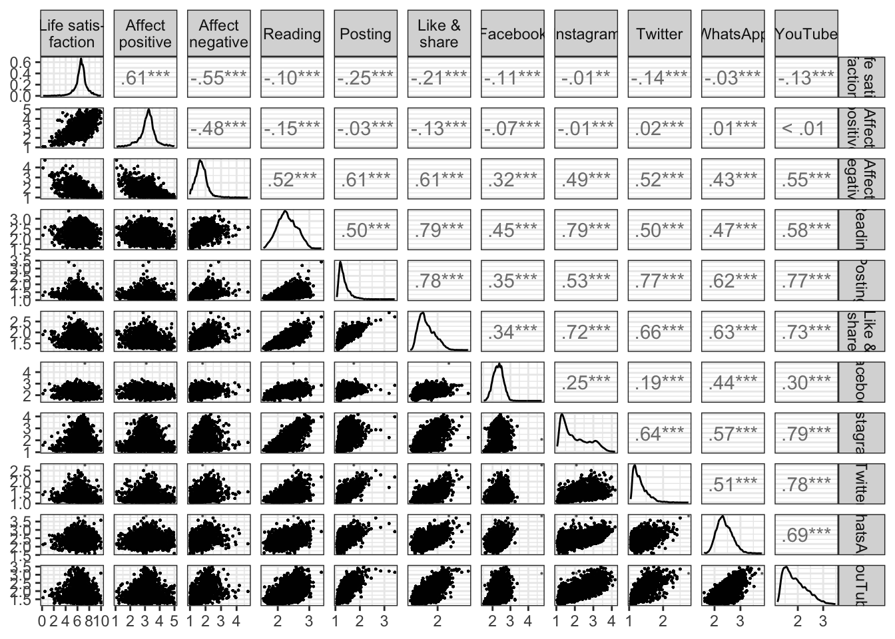
ggsave("figures/fig_cor.png", width = 8, height = 8)model_life_sat_lmer_pub <- "
life_sat ~
(1 | id) + (1 | wave) +
soc_med_read_w + soc_med_like_share_w + soc_med_post_w +
soc_med_fb_w + soc_med_ig_w + soc_med_wa_w + soc_med_yt_w + soc_med_tw_w +
soc_med_read_b + soc_med_like_share_b + soc_med_post_b +
soc_med_fb_b + soc_med_ig_b + soc_med_wa_b + soc_med_yt_b + soc_med_tw_b +
age + male + born_aus + born_aus_prnts + edu_fac + employment_fac +
res_vienna + acc_bal + acc_gar + home_sqm +
corona_pos_b + corona_pos_w +
work_h_b + work_h_w +
work_homeoff_b + work_homeoff_w +
hh_income_b + hh_income_w +
hh_adults + hh_child18 + hh_child17 + hh_child14 + hh_child5 + hh_child2 +
hh_oldfam + hh_outfam + hh_partner +
home_owner +
risk_prop_b + risk_prop_w +
act_wrk_w + act_spo_w + act_frn_w + act_sho_w + act_pet_w +
act_wrk_b + act_spo_b + act_frn_b + act_sho_b + act_pet_b +
health_w + health_b +
loc_cntrl_int_m_w + loc_cntrl_int_m_b
"Let’s first inspect multicollinearity.
check_collinearity(lmerTest::lmer(model_life_sat_lmer_pub, d_long_100_imp))No within-person predictor shows increased values for multicollinearity. Hence results straightforward.
Let’s next inspect results of within-person predictors. Only parts of model shown to save space.
fit_life_sat_lmer_pub <- with(d_long_100_mim_mice, exp = lmerTest::lmer(model_life_sat_lmer_pub))
fit_life_sat_lmer_pub <- summary(pool(fit_life_sat_lmer_pub), conf.int = TRUE)
print_res(fit_life_sat_lmer_pub)model_aff_pos_lmer_pub <- "
aff_pos_m ~
(1 | id) + (1 | wave) +
soc_med_read_w + soc_med_like_share_w + soc_med_post_w +
soc_med_fb_w + soc_med_ig_w + soc_med_wa_w + soc_med_yt_w + soc_med_tw_w +
soc_med_read_b + soc_med_like_share_b + soc_med_post_b +
soc_med_fb_b + soc_med_ig_b + soc_med_wa_b + soc_med_yt_b + soc_med_tw_b +
age + male + born_aus + born_aus_prnts + edu_fac + employment_fac +
res_vienna + acc_bal + acc_gar + home_sqm +
corona_pos_b + corona_pos_w +
work_h_b + work_h_w +
work_homeoff_b + work_homeoff_w +
hh_income_b + hh_income_w +
hh_adults + hh_child18 + hh_child17 + hh_child14 + hh_child5 + hh_child2 +
hh_oldfam + hh_outfam + hh_partner +
home_owner +
risk_prop_b + risk_prop_w +
act_wrk_w + act_spo_w + act_frn_w + act_sho_w + act_pet_w +
act_wrk_b + act_spo_b + act_frn_b + act_sho_b + act_pet_b +
health_w + health_b +
loc_cntrl_int_m_w + loc_cntrl_int_m_b
"Let’s first inspect multicollinearity.
check_collinearity(lmerTest::lmer(model_aff_pos_lmer_pub, d_long_100_imp))No within-person predictors show multicollinear relations.
In what follows, the results of within-person predictors.
fit_aff_pos_lmer_pub <- with(d_long_100_mim_mice, exp = lmerTest::lmer(model_aff_pos_lmer_pub))
fit_aff_pos_lmer_pub <- summary(pool(fit_aff_pos_lmer_pub), conf.int = TRUE)
print_res(fit_aff_pos_lmer_pub)model_aff_neg_lmer_pub <- "
aff_neg_m ~
(1 | id) + (1 | wave) +
soc_med_read_w + soc_med_like_share_w + soc_med_post_w +
soc_med_fb_w + soc_med_ig_w + soc_med_wa_w + soc_med_yt_w + soc_med_tw_w +
soc_med_read_b + soc_med_like_share_b + soc_med_post_b +
soc_med_fb_b + soc_med_ig_b + soc_med_wa_b + soc_med_yt_b + soc_med_tw_b +
age + male + born_aus + born_aus_prnts + edu_fac + employment_fac +
res_vienna + acc_bal + acc_gar + home_sqm +
corona_pos_b + corona_pos_w +
work_h_b + work_h_w +
work_homeoff_b + work_homeoff_w +
hh_income_b + hh_income_w +
hh_adults + hh_child18 + hh_child17 + hh_child14 + hh_child5 + hh_child2 +
hh_oldfam + hh_outfam + hh_partner +
home_owner +
risk_prop_b + risk_prop_w +
act_wrk_w + act_spo_w + act_frn_w + act_sho_w + act_pet_w +
act_wrk_b + act_spo_b + act_frn_b + act_sho_b + act_pet_b +
health_w + health_b +
loc_cntrl_int_m_w + loc_cntrl_int_m_b
"Let’s inspect multicollinearity.
check_collinearity(lmerTest::lmer(model_aff_neg_lmer_pub, d_long_100_imp))No within-person predictors show multicollinear relations.
Here are the results for the within-person predictors.
fit_aff_neg_lmer_pub <- with(d_long_100_mim_mice, exp = lmerTest::lmer(model_aff_neg_lmer_pub))
fit_aff_neg_lmer_pub <- summary(pool(fit_aff_neg_lmer_pub), conf.int = TRUE)
print_res(fit_aff_neg_lmer_pub)Then let’s report also the standardized results. Helps compare effect sizes across differently scaled predictors.
fit_life_sat_lmer_std <- with(d_long_100_mim_mice_std, exp = lmerTest::lmer(model_life_sat_lmer_pub))
fit_life_sat_lmer_std <- summary(pool(fit_life_sat_lmer_std), conf.int = TRUE)
print_res(fit_life_sat_lmer_std)fit_aff_pos_lmer_std <- with(d_long_100_mim_mice_std, exp = lmerTest::lmer(model_aff_pos_lmer_pub))
fit_aff_pos_lmer_std <- summary(pool(fit_aff_pos_lmer_std), conf.int = TRUE)
print_res(fit_aff_pos_lmer_std)fit_aff_neg_lmer_std <- with(d_long_100_mim_mice_std, exp = lmerTest::lmer(model_aff_neg_lmer_pub))
fit_aff_neg_lmer_std <- summary(pool(fit_aff_neg_lmer_std), conf.int = TRUE)
print_res(fit_aff_neg_lmer_std)Let’s visualize results. First, results of unstandardized predictors.
# get dat
data_tab_within <- rbind(
get_dat_res(fit_aff_neg_lmer_pub, fit_aff_pos_lmer_pub, fit_life_sat_lmer_pub,
type = "Activity", variance = "within", analysis = "Publication"),
get_dat_res(fit_aff_neg_lmer_pub, fit_aff_pos_lmer_pub, fit_life_sat_lmer_pub,
type = "Channels", variance = "within", analysis = "Publication")
)
# make fig
fig_results_within <- make_graph_res(
data = data_tab_within,
sesoi = "est",
legend = FALSE
, facet = "type"
# , title = "Results of selected covariates"
)
fig_results_within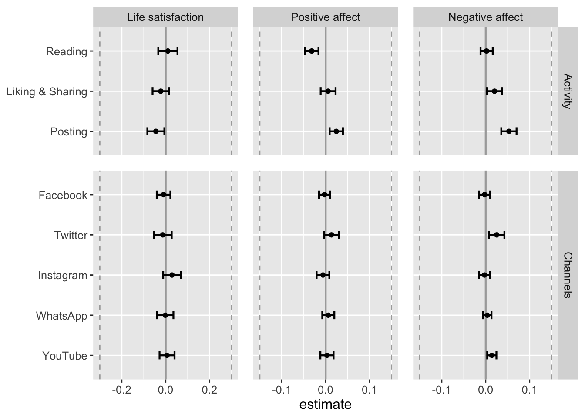
# save figure
ggsave("figures/fig_results_within.png",
width = 7, height = 4,
plot = fig_results_within)Let’s next visualize standardized predictors, to allow for better comparison across differently scaled variables.
# make figure
data_tab_comp_std <- rbind(
get_dat_res(fit_aff_neg_lmer_std, fit_aff_pos_lmer_std, fit_life_sat_lmer_std,
type = "Activity", variance = "within", analysis = "standardized"),
get_dat_res(fit_aff_neg_lmer_std, fit_aff_pos_lmer_std, fit_life_sat_lmer_std,
type = "Channels", variance = "within", analysis = "standardized"),
get_dat_res(fit_aff_neg_lmer_std, fit_aff_pos_lmer_std, fit_life_sat_lmer_std,
type = "News\nuse", variance = "within", analysis = "standardized"),
get_dat_res(fit_aff_neg_lmer_std, fit_aff_pos_lmer_std, fit_life_sat_lmer_std,
type = "Living\nconditions", variance = "within", analysis = "standardized"),
get_dat_res(fit_aff_neg_lmer_std, fit_aff_pos_lmer_std, fit_life_sat_lmer_std,
type = "Outdoor\nactivities", variance = "within", analysis = "standardized"),
get_dat_res(fit_aff_neg_lmer_std, fit_aff_pos_lmer_std, fit_life_sat_lmer_std,
type = "Psycho-\nlogy", variance = "within", analysis = "standardized")
)
fig_results_comp_std <- make_graph_res(
data = data_tab_comp_std,
sesoi = "std",
legend = FALSE
, facet = "type"
# , title = "Results of selected covariates"
)
fig_results_comp_std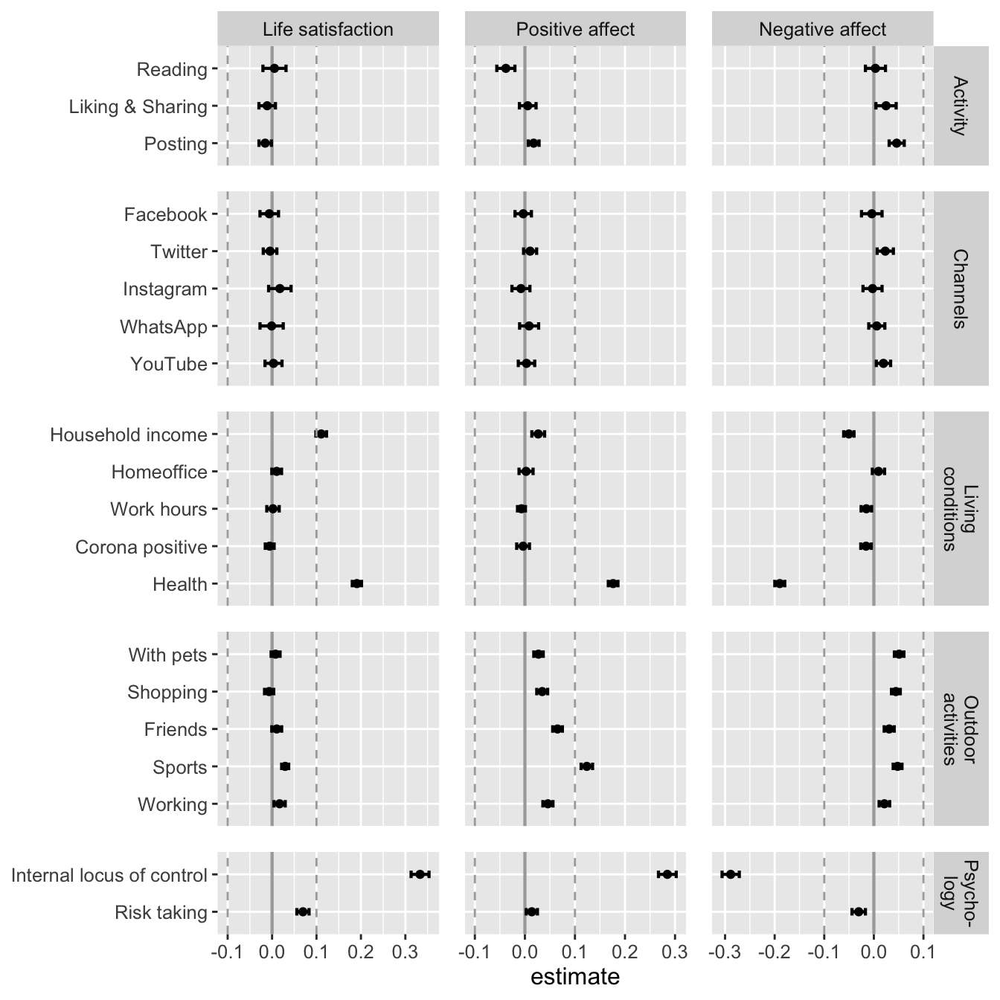
# save figure
ggsave("figures/fig_results_comp_std.png",
width = 7, height = 7,
plot = fig_results_comp_std)Let’s extract results for a table of within-person effects.
tab_within <-
data_tab_comp_std %>%
filter(Type %in% c("Activity", "Channels")) %>%
select(std = estimate) %>%
cbind(data_tab_within) %>%
mutate(p.value = td::my_round(p.value, "p")) %>%
arrange(dv) %>%
select(Outcome = dv,
Predictor = iv,
b = estimate,
`Lower` = conf.low,
`Higher` = conf.high,
beta = "std",
p = "p.value")
tab_withinFirst remove large objects
rm(fig_cor)save.image("data/workspace_2.RData")
Social media use
Social media use (and channels) were measured at waves 1, 2, 8, 17, 23, 28, and for everyone who was newly recruited during the study at the first wave.
Reading
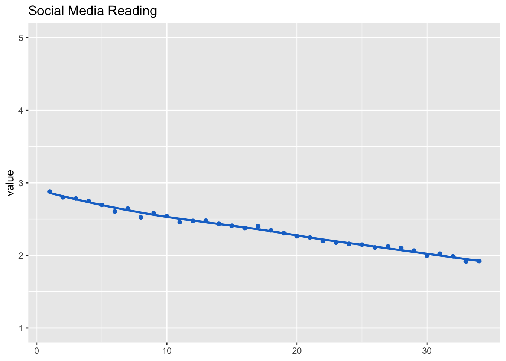
Liking & sharing
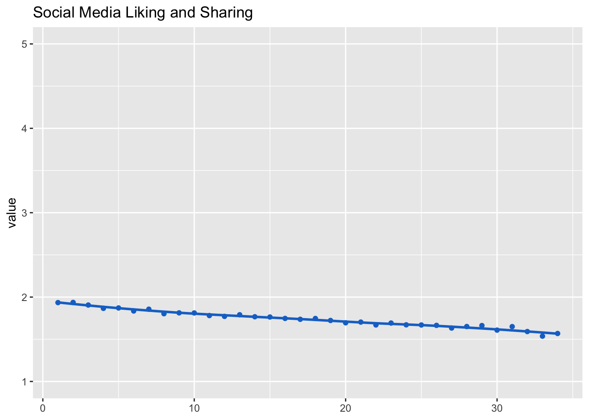
Posting
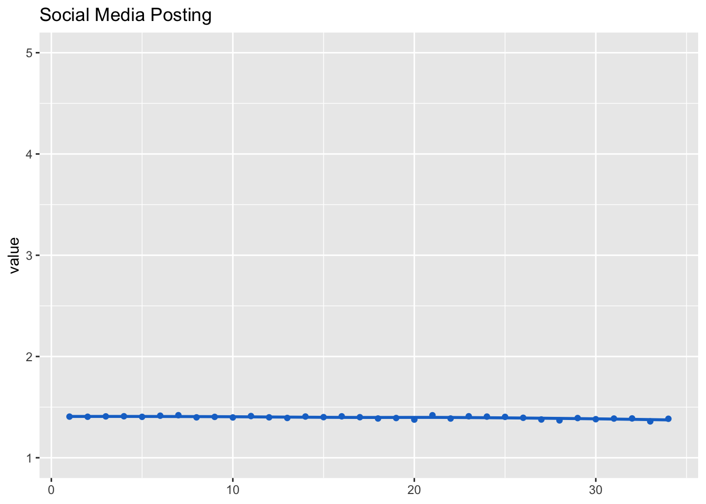